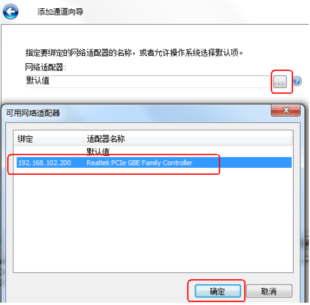
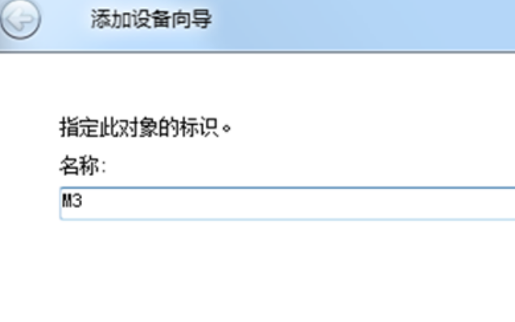

故障现象如下图：
如出现此问题第一步检查硬件PLC是否有故障提示（PLC上故障警示灯亮起）
第二步检查PLC连接到工控机的IP地址是否正确，正确的地址为：“192.168.102.200/255.255.255.0”
第三步若前两步都没有问题，则进行第三步Kepserver重新配置
（1）打开Kepserver进入界面如下：点击选择“连接性”，右键“新建通道”，随后在下拉选项中选择“Allen-Bradley Micro800 Ethenet”点击下一步。


（2）在“添加通道向导”界面上，通道名称需填写“PLC”；下一步默认设置，无需更改。


（3）到选择网络配置时，在下拉框中选择连接PLC控制器的网口，其网卡的IP地址为“192.168.102.200/255.255.255.0”，确认后下一步默认，直至完成通道建立。


（4）通道建立完成后，“单击添加设备”对象名称应为该机型名称，例XS、XM等


（5）下一步指定PLC的ID，即IP地址为：192.168.102.100，后续默认设置无需更改，直至添加设备完成


以上设置完成后，工控机和PLC已经建立连接，此时重新测试软件OPC是否能连接成功